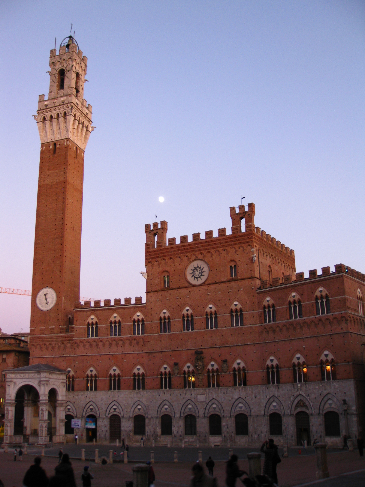

Por que quis aprender italiano?
Ciao! Benvenute e benvenuti! Qua, un piccolo spazio per parlare di Italia!
Nesse espaço compartilharei o que aprendi da/sobre a língua italiana, assim como livros (fáceis de ler para a fase de aprendizagem) e fotos das duas oportunidades que tive de ir à Itália.
Por quê?

A língua italiana surgiu na minha vida sem eu nunca ter entendido como ou porquê. Embora carregue um sobrenome italiano, meus antecedentes que vieram da Itália (meus bisavós) eram muito distantes. Meu pai, filho caçula de uma família de mais de 14 filhos também não teve muita proximidade com seus avós. Então, de onde veio essa vontade de aprender italiano? Simplesmente não sei. Talvez seja sim por causa desse sobrenome que carrego e que me carrega. Talvez seja por causa da curta proximidade com minha madrinha, italiana, de Nápoles. Talvez, talvez, talvez um dia eu descubra, se é que isso faça alguma diferença (eu acredito que não). O fato de eu ser apaixonada pela língua italiana e pela Itália não quer dizer que eu não seja apaixonada pelo Brasil e pelo português-brasileiro.
Livros
Em um dos estágios que fiz, com uma equipe ótima e super qualificada, fizemos uma pesquisa de livros para serem usados em curso de língua italiana. Com esta super tarefa, lemos muitos livros escritos por italianos, em italiano. Então... claro, aqueles que não foram adotados nesta primeira etapa, poderei sim indicar aqui com o nível de língua ou esforço necessário para leitura.
Veja mais...Itália, sua linda!